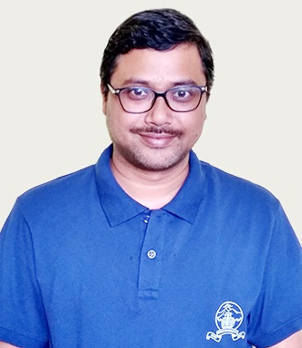

Assistant Professor (Senior Scale)
Department of Computer Applications
Sikkim University, Gangtok, India
My research focuses on Internet of Things, Edge Artificial Intelligence, Pervasive Generative AI, and resource-constrained machine learning systems, with emphasis on reproducible deployment in real-world environments.
📧 parthapratimray1986@gmail.com, ppray@cus.ac.in
🔗 ORCID |
GitHub |
Google Scholar |
Scopus
NEW
Special Issue Announcement:
"Multi-Omics for Drug Response and Combination Therapy Prediction" — hosted in Frontiers in Bioinformatics
Status: Now open for submission
Submission Link:
https://www.frontiersin.org/research-topics/77955/multi-omics-for-drug-response-and-combination-therapy-prediction
Topic Editors:
Partha Pratim Ray, Sikkim University, India
Pu-Feng Du, Tianjin University, China
Wei Lan, Guangxi University, Nanning, China
Asim Bikas Das, National Institute of Technology, Warangal, India
NEW
Special Issue Announcement:
"Pervasive Biomedical Informatics" — hosted in Frontiers in Bioinformatics
Status: Now open for submission
Submission Link:
https://www.frontiersin.org/research-topics/75918/pervasive-biomedical-informatics
Topic Editors:
Partha Pratim Ray, Sikkim University, India
Rahul Singh Jasrotia, The University of Texas Health Science Center at San Antonio, San Antonio, United States
Wei Lan, Guangxi University, Nanning, China
Lihong Peng, Hunan University of Technology, Zhuzhou, China
Manoj Kandpal, The Rockefeller University, New York City, United States
NEW
Special Issue Announcement:
"Internet of AI Things (IoAT): Mathematical Foundations, Edge Intelligence,
and Computational Paradigms" — hosted in International Conference on Mathematical Sciences and
Computational Intelligence (ICMSCI-2026), February 20–22, 2026, Department of Mathematics, P.G.D.A.V. College, University of Delhi.
Status: Now open for submission
Submission Link:
https://sites.google.com/pgdav.du.ac.in/icmsci-2026/special-sessions/ss-10-internet-of-ai-things-ioat
Topic Editors:
Partha Pratim Ray, Sikkim University, India
NEW
Special Issue Announcement:
"Internet of AI Things (IoAT): Agentic Smart Computing for Human-Centric and Sustainable Intelligent Systems" — hosted in International Conference on Mathematical Sciences and
8th International Conference on Smart Computing and Informatics (SCI-2026), , Swinburne Vietnam, Hanoi Location.
Status: Now open for submission
Submission Link:
https://sciconf.co/special-sessions
Topic Editors:
Partha Pratim Ray, Sikkim University, India
NEW 2025 Highlights: Associate Editor appointments, Top-2% Stanford Scientist recognition, and multiple high-impact journal and conference publications.
NEW Publication Highlights: